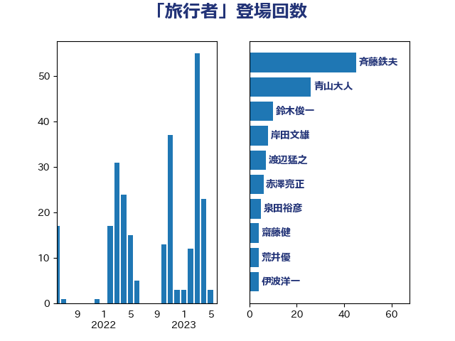

単語「旅行者」

| 斉藤鉄夫 | 公明党 | 45 回 |
| 青山大人 | 立憲民主党 | 26 回 |
| 鈴木俊一 | 自由民主党 | 10 回 |
| 岸田文雄 | 自由民主党 | 8 回 |
| 渡辺猛之 | 自由民主党 | 7 回 |
| 赤澤亮正 | 自由民主党 | 6 回 |
| 泉田裕彦 | 自由民主党 | 5 回 |
| 齋藤健 | 自由民主党 | 4 回 |
| 荒井優 | 立憲民主党 | 4 回 |
| 伊波洋一 | 無所属 | 4 回 |
| 中川康洋 | 公明党 | 4 回 |
| 清水真人 | 自由民主党 | 3 回 |
| 森屋隆 | 立憲民主党 | 3 回 |
| 岬麻紀 | 日本維新の会 | 3 回 |
| 小熊慎司 | 立憲民主党 | 3 回 |
| 小沢雅仁 | 立憲民主党 | 3 回 |
| 大西英男 | 自由民主党 | 3 回 |
| 萩生田光一 | 自由民主党 | 2 回 |
| 渡辺周 | 立憲民主党 | 2 回 |
| 横沢高徳 | 立憲民主党 | 2 回 |
| 山田勝彦 | 立憲民主党 | 2 回 |
| 小島敏文 | 自由民主党 | 2 回 |
| 小宮山泰子 | 立憲民主党 | 2 回 |
| 中野英幸 | 自由民主党 | 2 回 |
| 高木陽介 | 公明党 | 1 回 |
| 馬場成志 | 自由民主党 | 1 回 |
| 阿部弘樹 | 日本維新の会 | 1 回 |
| 長浜博行 | 無所属 | 1 回 |
| 鈴木義弘 | 国民民主党 | 1 回 |
| 野田国義 | 立憲民主党 | 1 回 |
| 西田昭二 | 自由民主党 | 1 回 |
| 若林洋平 | 自由民主党 | 1 回 |
| 米山隆一 | 立憲民主党 | 1 回 |
| 笠井亮 | 日本共産党 | 1 回 |
| 稲富修二 | 立憲民主党 | 1 回 |
| 秋野公造 | 公明党 | 1 回 |
| 石井苗子 | 日本維新の会 | 1 回 |
| 石井浩郎 | 自由民主党 | 1 回 |
| 田村まみ | 国民民主党 | 1 回 |
| 猪瀬直樹 | 日本維新の会 | 1 回 |
| 渡辺博道 | 自由民主党 | 1 回 |
| 浜野喜史 | 国民民主党 | 1 回 |
| 浜口誠 | 国民民主党 | 1 回 |
| 河西宏一 | 公明党 | 1 回 |
| 柴田巧 | 日本維新の会 | 1 回 |
| 東国幹 | 自由民主党 | 1 回 |
| 朝日健太郎 | 自由民主党 | 1 回 |
| 早坂敦 | 日本維新の会 | 1 回 |
| 岩谷良平 | 日本維新の会 | 1 回 |
| 山本佐知子 | 自由民主党 | 1 回 |
| 宮崎勝 | 公明党 | 1 回 |
| 堂込麻紀子 | 無所属 | 1 回 |
| 井上貴博 | 自由民主党 | 1 回 |
| 中川宏昌 | 公明党 | 1 回 |
| 中山展宏 | 自由民主党 | 1 回 |
| 三宅伸吾 | 自由民主党 | 1 回 |
| 一谷勇一郎 | 日本維新の会 | 1 回 |